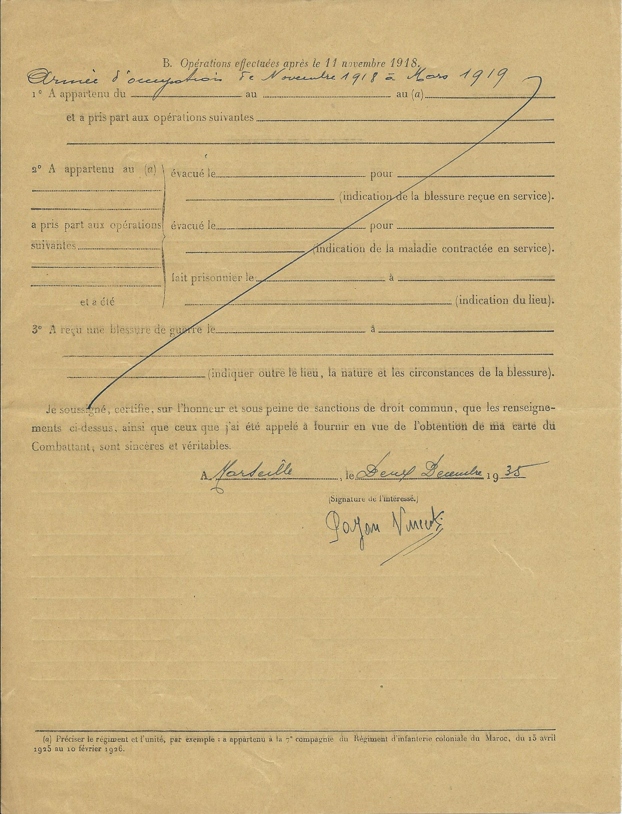

"Le Petit Provençal" 8 juillet 1929 Demande pour obtenir la retraite du Combattant. La loi de finances du 16 avril 1930 institue une allocation pour les titulaires de la carte de Combattant et ayant au moins 50 ans de 500 F par an à 50 ans et 1200 F à 55 ans (chiffres cités par Eugen Weber, La France des années Trente.) Vincent a 50 ans le 14 novembre 1935. |
 |